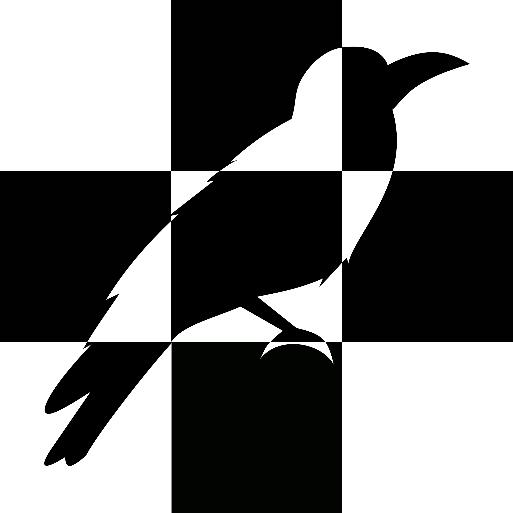

形式
Web
開催日
2020/3/25
解説
１問目
（制作：うりよしきば）
左上は同じ文字が同じ色になっており線でつながれています。
これらはクォークの６種類のアップ、ダウン、トップ、ボトム、チャーム、ストレンジを表しています。
これを元に下線部を埋めると「かいとう かぼちゃとおれんじのあいだ」となります。
右上の図において「南瓜」と「木登」の間を見ると「金尓」となり、これは「ニホニウム」と読むので
解答は右上最下段の通り仮名５文字で「ニホニウム」となります。
クォークの６種を出したら難しくなると思ったがそんな事もなかった
２問目
（制作：こーやん）
特殊な文字配置が含まれる右側の式から、⑧⑨⑩＝cos、⑩②⑫＝sin と推測します。
このような形の式を探すと、「アステロイド」という曲線を表す式 “x=a cos3 θ, y=a sin3 θ” が当てはまります。
埋められた文字を頼りに左の文字列を見ると、 “➀i➀③y ➀i➀③⑤” となっており、この配列を満たす単語は fifty fifth のみです。
アステロイドの式を asteroid (※) として全体の文章を見ると、
What is the fifty fifth asteroid?
となります。 asteroid には小惑星という意味もあるので、55番目の小惑星「パンドラ」が答えでした。
当初は cos と sin 以外の導線も用意していたのですが、全体戦ならヒントを削っても解かれそうということでこんな謎になりました。
※アステロイドの綴りには astroid と asteroid の2種類があるようです。
３問目
（制作：かい）
横26マスにはアルファベットがabc…と入るのと同時に左から「日月金木水火土竹戈十大中一弓人心手口尸廿山女田難卜重」と入ります。これは「倉頡輸入法」という中国語の入力方式でした。
横一列で漢字一字を表しており、実際に数字の順に入力してみると、
上から｢國破山河在城春草…｣となります。
これは杜甫の『春望』でした。
春望 杜甫
國破山河在
城春草木深
感時花濺涙
恨別鳥驚心
烽火連三月
家書抵萬金
白頭掻更短
渾欲不勝簪
4-3: 右から4列目上から3行目:鳥
3-3: 3列目3行目:花
5-5: 5列目5行目:月
となるので、最終的な答えは、｢花鳥風月｣の残りの一つである｢風｣となります。
大学生になってから急に漢字が書けなくなったように感じます...
４問目
（制作：こーやん）
青い文字はどうやらモールス信号のようです。
仮名だと上の文字列が「よけに゛らむれなぬよいむい」となって意味が通じず、アルファベットだと「－－－－」という信号がないので、これは日本語でも英語でもない言語のモールス信号ではないかと推測する必要がありました。
試しにギリシャ文字のモールス信号を当てはめると、上の文字列は「ΜΥΘΙΣΤΟΡΗΜΑΤΑ」となり、これはギリシャ語で小説という意味になります。
そして、4つの信号に該当するギリシャ文字は、γ、θ、χ、ηです。
ギリシャ文字を含む小説といえば森博嗣の「Gシリーズ」があります。
4つのギリシャ文字に対応する小説はそれぞれ、
キウイγは時計仕掛け
θは遊んでくれたよ
χの悲劇
ηなのに夢のよう
となり、１２３４の場所を読むと「はんのう」となります。
何の言語かを特定する部分で根気がいるかもしれません。
５問目
（制作：武田鈴）
右上の吹き出しの中の円は五等分されており、これは漫画｢五等分の花嫁｣のヒロインを表していました。
それぞれ、
黄→中野一花
黒→中野二乃
青→中野三玖
緑→中野四葉
赤→中野五月
とイメージカラーを表していました。
しかし、5人の色に応じて左下の数字に名前の文字を入れてみても上手く言葉が出来ません。
そこで円が吹き出しの中にあり、数字が吹き出しの外にあることから、声優の名前を入れることに気づく必要がありました。
それぞれ
一花→花澤香菜(はなざわかな)
二乃→竹達彩奈(たけたつあやな)
三玖→伊藤美来(いとうみく)
四葉→佐倉綾音(さくらあやね)
五月→水瀬いのり(みなせいのり)
でした。
それぞれ対応する文字を読むと「たかもりなつみ」
同じく声優の高森奈津美さんが出てきました。
矢印は吹き出しの方向を指しており、高森奈津美さんが声優をつとめる、「上杉らいは」が答えとなります。
二乃派です
６問目
（制作：komei）
2つの袋にはそれぞれひらがなとカタカナが詰め込まれています。下の数字のペアは「ひらがなの個数-カタカナの個数」の順でそれぞれ文字1つを表しています。
しかし右側の袋は何が入っているか見えません。そのため袋の中意を特定していきます。
左の袋を並び替えると「ユニコーンのつの」「たぬきのおきもの」「まじゅうのキバ」「ふはつだん」が出てきます。これらは星のカービィスーパーデラックスの洞窟大作戦にでてくるお宝の名前です。そしてこの4つのお宝の値段の合計値は袋の下の95780Gと一致します。よってこの袋は（）内の個数のお宝が入っていて、値段の合計が下に書かれていることになります。ということで、47個で3141590Gになるお宝の組み合わせを見つけ、そのお宝のひらがなとカタカナの数を数え、下の数字のペアに該当する文字を拾うと「デオキシス」になります。
47個で3141590Gになる組み合わせ、プログラムで解かれたのか手作業で解かれたのか気になりますね
７問目
（制作：こーやん）
イラストなどを仮名に直してフリック入力の配置にすると、緑矢印はライフゲームの規則になっています。
例えば「蚊、旗、皿」→「傘、矢、歯」→「傘、歯」→「魚、歯」↩ なら
□■■ → □■■ → □■■ → □■■
■□■ → □□■ → □□■ → □■■
□□■ → □■□ → □□□ → □□□
□□□ → □□□ → □□□ → □□□
と配置が変わっています。
それを踏まえると、f(9) は「た、は、ら、濁点」、 f(76) は「か、ま、ら」でできる言葉だとわかります。
これを頼りに f(x) が表すものを探すと、仏教の経典に登場する巨大な数の名前が該当することがわかります。
つまり f(x)=107×2x であり、
f(9) ＝ たばら、 f(76) ＝ かまら
となっています。
「f(n)、？」→「傘、花、玉」が成り立つライフゲームの配置を考えると「f(n)、？」は「か、な、は、ま、濁点」の配置となり、これを満たす f(n) と？ は「まかば」 (＝f(77)) と「な」なので「77な」が正解でした。
いろいろな難しさが凝縮された問題だったかと思います。
制作では「傘、花、玉」の一つ前の配置が一意であることを確かめるのに一番苦労しました。
８問目
（制作：うりよしきば）
上から三番目を逆から読むとMAJORとなることから、逆から読むと推測します。
これらは全て学名の一部ですが学名の後半部分だけでは全ては確定しません。
ほぼ確定する物として上から二番目のsajori⇨サヨリ、上から六番目のherzensteini⇨カレイ、上から七番目のsaira⇨サンマ、yessoensis⇨ホタテ、myriaster⇨アナゴがあります。これから、全て魚の名前が書いてあると推測できます。
これらの順は「おさかな天国」の一番の歌詞で出てくる海産物順であり、空白部には「イクラ」が当てはまります。「カレイ」が「レイカ」になっていたため、「イクラ」は「クライ」となり、漢字一文字で「位」がこの問題の回答となります。
学名を反転しただけの問題です。この全体戦の中で癒し枠ですね。
他の人がヤバすぎて比較的多くの癒し枠を作ってしまっている。
９問目
（制作：komei）
外周を上手く読むと「たりないよんもじでごもじをつくってさいたんでたおしたきろくよめ」とでます
盤面をよく見ると、シークワーズの要領でところどころアルファベットのひらがな表記が見られます
しかしどんなにさがしても「えー」「いー」「けー」「だぶりゅー」は見つかりません。
足りない4文字から5文字の英単語「AWAKE」が出来ます。これはコンピュータ将棋ソフトの名前でもあります
AWAKEとの公式戦の中で22手目で投了という速さで終了した試合があります。2015年4月11日に行われた電王戦の第5局(対 阿久津八段)です
この棋譜の、駒が移動した場所をたどると「もんだいのこたええふおーしーゆーえすでした」となって答えは「FOCUS」です
AWAKEのこの試合、結構話題になったので覚えていた人もいるはず…？
１０問目
（制作：武田鈴）
緑青赤の数字は、Sardowverseのコスト、攻撃、体力を表していました。
それぞれのスタッツは一意に決まるものでした。
また黒数字はそのフォロワーの進化前のフレーバーテキストの何文字目を参照するかを表しており、それぞれ
①星 ⑥双
②無 ⑦光
③再 ⑧災
④再 ⑨星
⑤識 ⑩全
となりました。
これは進化前が
「一番星の下、神は無二たる啓示を与えた。
再三再四と繰り返す人の業に、裁きでなく赦しを与えよ。
彼女は頷き、天に己が五識を捧ぐと誓った。」
進化後が
「この世は神が創りたもうた大きな双六。
彼女は七光背負いし小さな駒。
訪れる八災、試練、しかし瞬く導きの九曜星。
全てを越えた旅の果て、彼女は十全なる権能を得る。」
というフレーバーテキストを持っているフォロワーを表していました。
よってこのフォロワーの名前である「開闢の予言者」が答えとなります。
開闢はロマンでありガチカード
１１問目
（制作：うりよしきば）
縦になっているものはRGB値+透明度、横になっているものはutf-8で変換します。
左上は色を並べると『ルーマニア』の国旗になります。
下は左が「赤」色、真ん中が「の」「他」、右は「人」色なので『赤の他人』となります。
右上は下よりこの色が「人」色と分かります。これが透明になっているので『透明人間』を表しています。これらの単語を片仮名にすると
ルーマニア ⇒ル－マ＝ア
トウメイニンゲン ⇒トウ×イ＝ンゲン
アカノタニン ⇒アカ／タ＝ン
と計算式になっていることが分かります。これを解くと
１２３４５６７８９０
アンイウタマルゲトカ
となります。従って答えは「アルマイト」でした。
原案では１７の部分を隠していたのですが却下されました。
豚辞書では一意なんだけどなぁ()
１２問目
（制作：あぐにゃん）
左のグラフは「WSOP(テキサスホールデムの最も大規模な世界大会)メインイベントの、優勝者と準優勝者の決着ハンドをブラックジャックのスコアとしてみなした値」を表していました。
例えば2019年の優勝者と準優勝者の決着ハンドはK♥K♣と8♠4♠です。これらをブラックジャックのスコアとして見た時の値は20と12なので、確かに一致しています。
WSOPの各年の決着ハンドは以下のwikiに記載されてます。
日本語版wiki
英語版wiki
よって、右側の該当する年で優勝あるいは準優勝した人の名前の頭文字を順に読むと、答えは「check」と出てきました。
ポーカーは以前から好きで、最近謎クラの間でもポーカーが流行ってきてるように見えてきたので、この問題も知識問だけど解けるやろって思って作りました。
面白いゲームなので皆さんもぜひ機会があればやってみてください。
この問題で私のことは嫌いになっても、ポーカーのことは嫌いにならないでください。

１３問目
（制作：こーやん）
右下の注意書きから、アルファベットを使うことと、その大文字小文字は区別しないことがわかります。
そして、カッコの中の数字は上のものに該当する単語の文字数を表していました。
数字を頼りにイラストが表す単語を推測すると、
XL FC J e PhD
となります。これらのアルファベットを数字に変換すると、
24, 12, 6, 3, 10, 5, 16, 8, 4
となり、これは初期値24の「コラッツ数列」というものになっています。
この後に続くのは 2, 1, 4, 2, 1, 4,…… の繰り返しなので、？に該当する単語は BAD でした。
題材にしているコラッツ予想というものは、
どんな自然数でも「偶数なら2で割り、奇数なら3倍して1を足す」という操作を繰り返し行うとどこかで 4, 2, 1, 4, 2, 1,…… のループに入るだろう
という予想のことです。
主張は単純なのにいまだに未解決問題のようです。
１４問目
（制作：武田鈴）
それぞれの6ケタの数字を2ケタずつに区切ると73～92/54～60/76～86とある程度の範囲内にあることがわかります。この事とピンク、ブルー、イエローの色から「アイドルマスターシンデレラガールズに登場するアイドルのスリーサイズ」を表していることに気づく必要がありました。それぞれ
925885→松本沙理奈
785480→佐久間まゆ
845586→ナターリア
？？？→双葉杏
735576→森久保乃々
835782→一ノ瀬志希
746079→高森藍子
825986→小日向美穂
となります。？？？が双葉杏のスリーサイズであることに注意しましょう。
これらのアイドルは第８回総選挙で上位におり、それぞれ
松本沙理奈 20位
佐久間まゆ 8位
ナターリア 9位
双葉杏 18位
森久保乃々 25位
一ノ瀬志希 6位
高森藍子 15位
小日向美穂 23位
でした。ここで順位をアルファベットに変換すると
thirty fortytwo
という言葉出てきました。総選挙で順位を見てみると
30位→前川みく
42位→多田李衣菜
であり、この二人のユニットである「アスタリスク」が答えとなります。
みくにゃん可愛い
１５問目
（制作：うりよしきば）
メイ、？？、バスは線分をそれぞれ4:7,7:10,1:1に分けています。この比と文字列の対応を用います。
つまり、メイ＝4:7,？？＝7:10,バス＝1:1と考えます。
ここでこのような比の表現として一次元だけではなく二次元の表現、つまりタテ：ヨコも存在することを考えます。
この問題において比が表していたものは国旗の縦横比でした。
縦横比が1:1の国旗は「バチカン市国」と「スイス」、4:7なのは「メキシコ」と「イラン」であり、どちらも頭文字を並べると「バス」「メイ」となります。
以上より縦横比が7:10の物を探すと「アンドラ」と「ブラジル」となるため答えは「アブ」となります。
となりのナントカっぽいのはたまたまです。
JanからDecを全体とした線分を4:7に分ける部分にMayがあるのもたまたまです。
縮尺はいじわるです。
１６問目
（制作：かい）
これはURLを示していました。アルファベット・記号それぞれの言葉の頭文字をとったものです。
例：
A（えー）→ え
B（びー）→ び
：（ころん）→ こ
/（すらっしゅ）→ す
.（どっと）→ ど
？（くえすちょんまーく）→ く
大きな文字は大文字として変換していくと、https://writening.net/page?yWpYKtというサイトにたどり着きます。
このサイトには、
What is missing here?というタイトルとともにhttps://whatismissinghere.github.ioというURLがありました。そのサイトに行ってみると、
黒い正方形があります。これはどうやら矢印キーでその正方形が白と黒に切り替わるようです。白黒の切り替わりが同じ方向に一定数以上押しても切り替わらないことから、この正方形が3×3の形になっていることを想像する必要がありました。
全体としては以下の画像のようになります。
これは皆さんおなじみC-lock-rowのロゴの背景ですね。

"What is missing here?"（ここに欠けているのは何？)ということなので、解答は"crow"（カラス）でした。
某謎合戦を意識しているとかしてないとか。
URLの"yWpYKt"の部分はランダムだったのでアルファベットの頭文字だけで確定するように先輩にURLガチャしてもらいました()
１７問目
（制作：あぐにゃん）
四角の中のものはそれぞれ以下のワードを表していました。
(元素)ようそ かりうむ
(嵐のメンバー)さくらい あいば
(魚)まぐろ きす かます
(通貨単位)たら どらむ えん
(苗字)なち なばため しめ
(星座)つる うお おひつじ
(県庁所在地)ながさき なは さが
(国名)たい まるた いんど
(図形など)ろく すくえあ えん
(色)こん しあん くろ しろ
(難読漢字)つば ばく くわ わに にれ
11個あるものと言えばみなさんご存じ立方体の展開図の種類なので、展開図をスケルトンの盤面と見立てて埋めます。
よ
かりうむ
そ
あ
さくらい
ば
か
まぐろ
きす
た
どらむ
えん
し
なばため
ち
う
おひつじ
る
さ
ながさき
は
まるた
いんど
ろ
すくえあ
ん
こ
しあん
くろ
つば
くわ
にれ
すると、通貨単位の「どん」だけが足りていないことがわかるので、答えは「どん」です。
展開図を使う別の問題を考えていたのですが、実装が難航していたところこの問題を思いつき作りました。
「11といえば展開図」←ほんまかって感じですよね、全体戦の問題を作るのは初めてだったので難易度調整迷いましたが、集合知の力を信じました。
１８問目
（制作：武田鈴）
4フレーズ目、7フレーズ目はそれぞれ「only my railgun｣と「This game｣のイントロでした。
このことから1～3フレーズ目は「only my railgun｣、5～6フレーズ目は「This game」を表してるのではないかと考えることが出来ます。
弾いてる音の数と単語の文字数が一致してることから、音とアルファベットが一対一対応しているのではないかと考えることが出来ます。
左手(低音)のド～ド、右手(高音)のド～ドで合わせて26音。ちょうどアルファベットの文字数と同じです。
8フレーズ目は対応させると「Q」となり、その後のフレーズが何を表しているかという問題提示になっていました。
その後の音を対応通り読むことで「POP TEAM EPIC(ぽぷてぴぴっく)」が答えとなります。
作りたいというだけで生まれた音を使った謎です。最初は和音で弾いてたのですが、さすがに無理ということで難易度落としてこの形です。許して。

１９問目
（制作：こーやん）
プログラムを組むなどしてこれを素因数分解すると以下のようになります。
655374 × 1310716 × 5142295 × 21246792 × 9369319
指数順にして素数を整理すると、
32212254719 ＝4番目の Woodall素数
2124679 ＝2番目の Wolstenholme素数
9369319 ＝4番目の Newman–Shanks–Williams素数
65537 ＝5番目の Fermat素数
514229 ＝9番目の Fibonacci素数
131071 ＝6番目の Mersenne素数
となります。
Woodall の4文字目、 Wolstenholme の2文字目…… と文字を拾うと「domain」となるので正解はdomainでした。
Solve Me というタイトルで、本当に巨大な数を素因数分解させるというのがやりたくて作ってみました。
参考：
このサイトで以下を実行すると答えが返ってきます。
require "prime"
Prime.prime_division(402254197733765270790758915710957395787548010785487325719081041369329444961937481937530780753432581419239990319685216328509)
２０問目
（制作：firsecthir）
KOREHASAIGONOMONDAIの一部が太文字になっています。太字の部分を並び替えると「shindanmaker」となり、診断メーカーのURLの末尾を970585にして検索すると「君はけろけろけろっぴになれるか」という診断が出てきます。
この診断は、全部で6個のリストからそれぞれ1個ずつランダムに排出された文字を連結して出てきます。各リストは49個の同じハズレ文字列と各リストごとに1個ずつ割り当てられたアタリ文字列からなります。
とにかく診断を回して文字列を集め、適切に区切ることで各リストの中身を特定していきます。すると各リストで固有のアタリ文字列、1つ目から順に「しろ」「くろ」「のさ」「いとと」「かいと」「うしろ」を特定できて、答えは「しろくろのさいと」となります。
C-lock-rowでは初めまして。firsecthirと申します。
この問題は全体戦でよく使われるテーマ「集合知」を意識しました。
最終問題にふさわしい1問になっていれば幸いです。